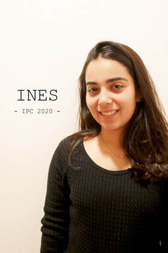
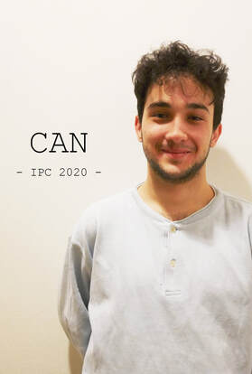
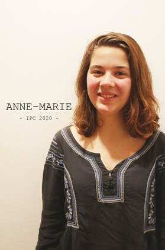

In my opinion peace doesn’t mean absence of war. For me it’s the absence of violence. Peace is an activity. It’s a commitment that is practiced every day in all our interactions. Peace is a relationship of good living together, solid and sustainable based on respect, serenity, cordiality between all humans but also any form of life on earth. That is why I joined the International Peace conference, I wanted to propagate peace and no violence. Make the world a better place where everyone can live together and help each other.

If we try to find a definition for peace, we may be arguing for hours and never reach an agreement. But what would take us less than a second is to concur on what peace will never be: A Fighting. A war. A battle. A combat. Nevertheless, I come from a place where I have never seen an armed conflict, but that cannot be said to be in peace. I want to probe this apparent relativity of the concept of peace, while getting the opportunity to know other points of view; and I know IPC is the best place to do so.

I perceive peace as an everlasting journey, as an ideal that we constantly need to strive for. Peace, for me, is about questioning our actions and our achievements in an attempt to create evolution in the world as we know it. I think that individuals like me, who are born with the privilege of not knowing war, have to acknowledge that they have a responsibility to aim and work for achieving equality, non-violence and respect. The absence of conflict might be utopian, but understanding each other’s mindset and being capable of introspection is a meaningful step that we can all take. IPC 2020 is for me the occasion to put those ideas into action, for myself, for the community, and for the world.